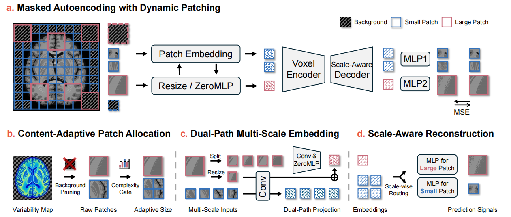
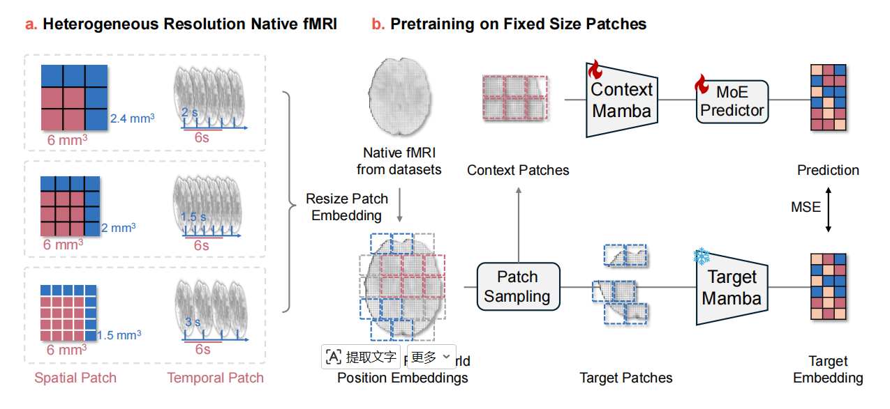
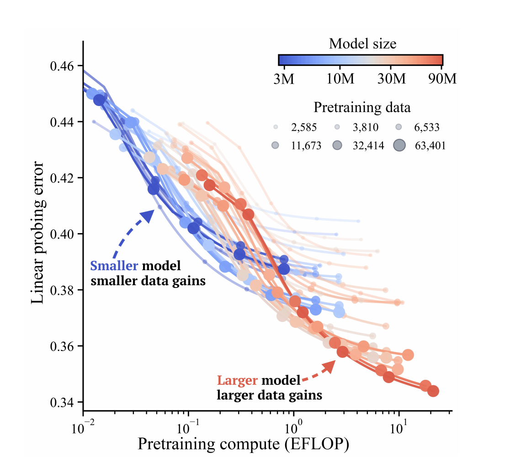

Omni-fMRI: A Universal Atlas-Free fMRI Foundation Model
Dynamic patching enables efficient, atlas-free representation learning directly from voxel-level fMRI.
I study how to learn meaningful representations of the human brain, with the goal of bridging the gap between brain modeling and real-world applications through AI.
I am an undergraduate in Biomedical Engineering at Shenzhen University, and a visiting research student at the Neural Computing and Control (NCC) Lab, SUSTech, advised by Prof. Quanying Liu. I also have the opportunity to collaborate with Prof. Hongkai Wen and Prof. Jianfeng Feng at Fudan University and the University of Warwick.
My research focuses on NeuroAI, particularly foundation models and representation learning for fMRI. I am also exploring trustworthy AI systems with JEPA and uncertainty-aware learning.

Dynamic patching enables efficient, atlas-free representation learning directly from voxel-level fMRI.

Physical-unit patching and Mamba-JEPA learn native-space fMRI representations across different acquisition resolutions.

A controlled scaling study reveals how data size, model capacity, and training duration jointly affect fMRI performance.
Visiting Research Student · NCC Lab
Advisor: Prof. Quanying Liu · Since July 2025
B.Eng. in Biomedical Engineering
Advisor: Prof. Baiying Lei · Expected June 2027

Winter School